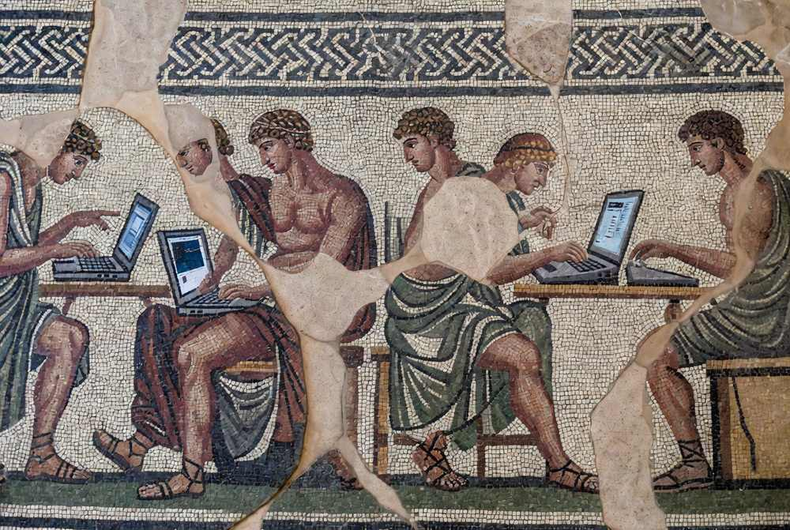

See the system.
Map how work actually happens. Identify people, behaviours, processes, information and the constraints that shape what is possible.
We help organisations become more capable by understanding how people work, redesigning the systems around them, and putting technology where it creates real leverage.

Technology is most useful when it extends human capability. We move between the individual, the team, the organisation and the wider environment because meaningful change rarely sits at one level.
Map how work actually happens. Identify people, behaviours, processes, information and the constraints that shape what is possible.
Model choices, test scenarios and make complex decisions more legible before committing resources in the real world.
Rework workflows, interfaces and organisational systems around how people actually operate, rather than forcing people to work around technology.
Build and embed systems that augment people at the point where work happens, extending what they can see, decide and do.
The machine should extend the person, not ask the person to become the machine.

People still make judgements, build relationships, create, lead and take responsibility. Our job is to make the systems around them more capable of supporting that work.
Tell us what your organisation is trying to understand, build or change.
Get in touch →